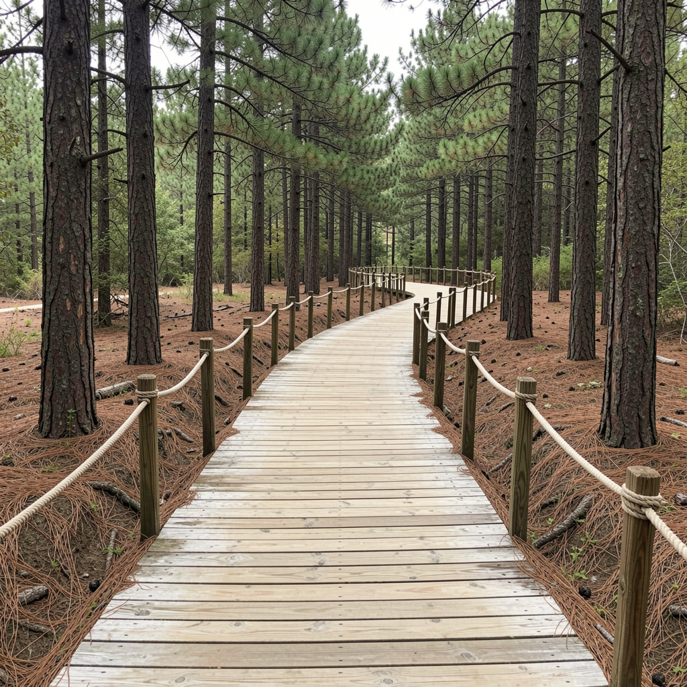
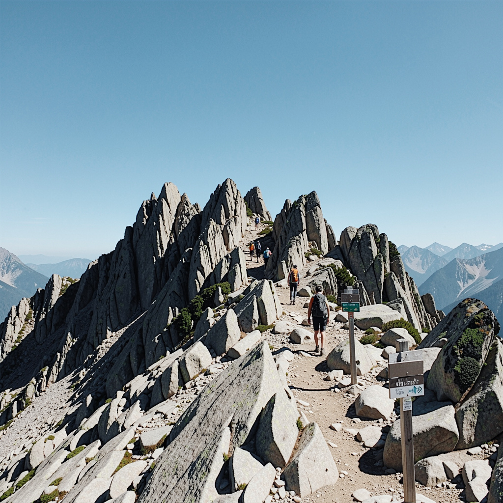
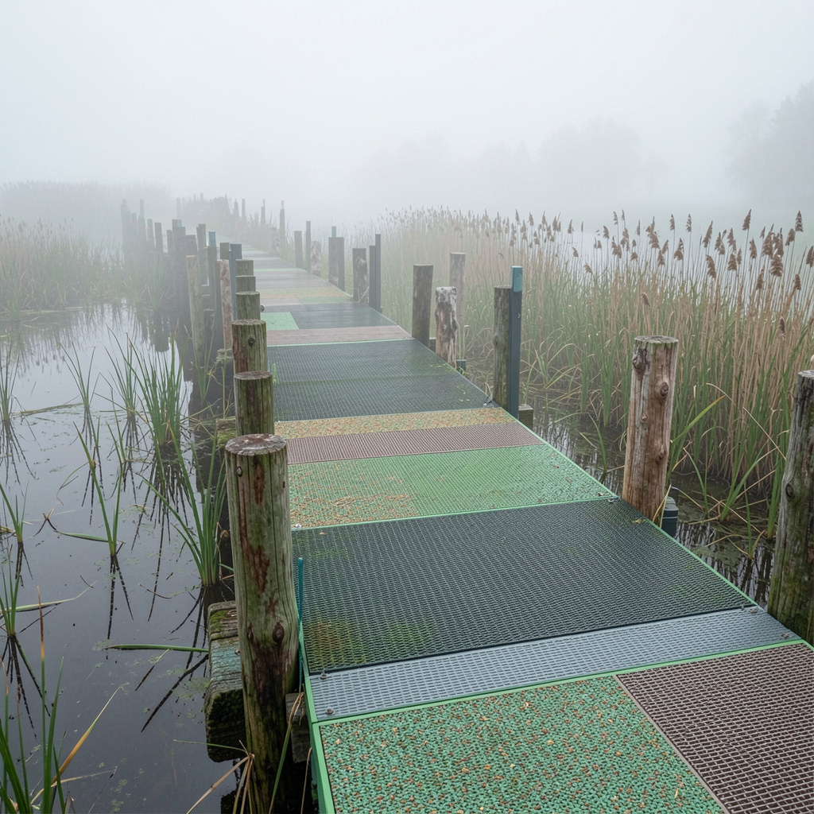

Eco-Friendly Trail Registry
Carefully mapped paths selected for their low ecological impact, beautiful scenery, and community preservation efforts.

Whispering Pines Loop
Distance: 4.2 Miles | Difficulty: Easy
Features restricted walking zones to shield native root systems from degradation.

Rocky Ridge Summit
Distance: 6.8 Miles | Difficulty: Hard
Strict pack-in pack-out regulations maintain pristine conditions above the tree line.

Hidden Falls Sanctuary
Distance: 2.5 Miles | Difficulty: Moderate
Features boardwalk setups built entirely out of recycled materials to cross delicate wetlands.